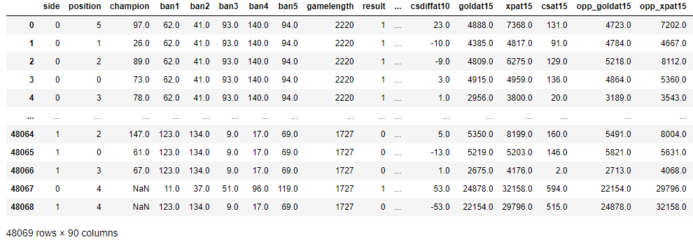
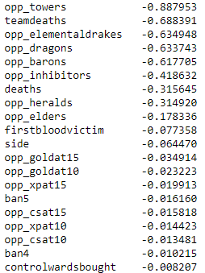
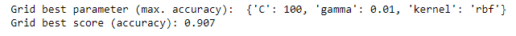

League of Legends (LoL)
is a multiplayer online battle arena video game developed and published by Riot Games.
The game has a variety of game modes but the most popular feature is Summoner's Rift, where two teams of 5
aim to destroy the enemy team's Nexus (basically their base). League of Legends has one of the largest eSports communities where
countless teams compete for millions of dollars every year. Arguably, LoL has a pretty significant learning curve where
numerous factors can influence a match, but what are the most influential factors when deciding who wins a game?
This project provides some framework to answer that question, but also provides some machine learning models that can be used
to predict a match of League of Legends. Ultimately, a model that is able to predict the liklihood of winning mid-game while also
providing suggestions on what a team needs to do to increase their chances of winning is the goal.
The Data
The data used in this project is imported from Oracle's Elixir, but it is possible to obtain additonal data using a key for the Riot API.
The personal key is easy to recieve, but doesn't have a large amount of features that are super relevant to "deep data".
The Oracle data used consists of matches from the League of Legends split from January to 07/21/2020.
There are over 100 features in our dataframe, where utlimately I wanted to see the probability of winning (result).
One issues that is apparent is that numeric codes will needed to be added instead of strings (e.g. Champion Names).
Furthermore, since I currently care about whether a team wins or loses (binary), I can use an SVM, Logistic model,
or anything that deals with binary output.
However, I want to run an SVM and a neural network due to its power and ease of inputting variables.
After looking at the dataframe,
the columns that need to be given numeric codes includes the champion names which often appear in the `ban` columns
and the column of the player being played.
Since the champion name appears in multiple columns it might be better to using a dictionary where each champion
is tagged to a code. Other columns that will be encoded include `league`, `side`, `position`, and a few others.
Now the data is in ready to look at (sort of), I will create a new copy of df and remove any columns that im not
interested in or could possibly mess up ant analysis.
This includes columns with player names and any urls.
I will not be looking at league or patch right now.
This is something I'll probably do later and do a focus analysis on both league and individual patches to see
how the meta differs.
There are so many projects and asepects to look at, I am going to be looking at team statistics rather than individual.

Dataframe after the one-hot encoding and numeric codes given to champions.
Each champion is given a number in alaphabetic order, for example, Aatrox is 1, Ahri-2,...Zyra-148.
Correlations
Normally I like visualizing the data with the seaborn package to check out the correlations between features,
this gives a general idea on what variables impact the result of a League match.
However, when there is 90 something variables, a heatmap and correlation plot looks pretty messy.
Instead, I can just solve for the correlation matrix and then rank the Pearson's r.
The results were not too surprsing.
text for caption
Looking the the fifteen most correlated variables with winning we do not see anything too surprising.
Variables involving towers are the top two most correlated which makes sense.
The more towers you destroy the easier it is to get into a team's base.
However, we see that destroying the first tower, or even the first middle tower,
isn't extremely correlated with winning the game
(but moderately correlateed with the first three towers being the most correlated).
Another not very surprising stat is that defeating dragons, drakes,
and barons are highly correlated with winning the match.
Makes sense, the team gains buffs and gold which can make a team strong, thus making it easier to defeat opponents.
This leads into team kills and deaths being correlated with winning. Anyways, no surprise there.
I can also look at the most negatively correlated variables with losing a match.

Caption
We know what is associated with winning, and it isn't shocking to see that losing is correlated with losing dragons,
team fights, turrets etc..
However, we see some very small correlations with the gold and xp difference towards the middle of a game.
And yes, correlation does not imply causation, but I will look at the stats of that later.
It would be really interesting to see which dragons are actually slain, to see if teams choose to ignore certain ones.
Ultimately, it would be great to have a model, and import in a games actions
(e.g. losing/killing cloud drake) and see the probability of the team winning,
or what a team needs to do to increase there chances of winning after losing an action.
Support Vector Machine (SVM)
With some of the correlations in mind, I can use the seaborn package to visualize an example.
In this example, I used team kills per minute versus the gold spending percent difference.
It's pretty clear that the more gold you spend compared to your opponent, and the more kills you get, the better your chances are of winning.
Also, 1's are a win and 0's are a lose (for clarification).
Correlation plot of kills per minute versus the gold spending percent difference
With the correlations in mind, I want to create an SVM to predict if a team will win or lose in a match of LoL.
Theoretically and often, I can put in numerous variables into an SVM but it become nearly impossible to find an effecient way
to visualize the data.
Therefore, for now, I will be using the same variables in my correlation plot above.
Following machine learning standards and paramter tuning protocol, my model recieved an accuracy of just over 90% on testing data.
Reminder, an outcome of 0 is a loss, and an outcome of 1 is a win.
Using the parameters given from the GridSearch:

I get an rbf SVM looking like...
SVM plot of kills per minute versus the gold spending percent difference
Well, that model turned out pretty good,
and I can also use Sci-Kit's ".predict()" to input paramters and see the expected result.
Neural Network
Looking at the team data, I created a nueral network with four dense layers and 2 droput layers. The netowrk headTotal params: 1,323
1,323 Trainable parameters. I did not conduct any hyper-paramter tuning but recieved very high accuracies on the training, testing, and validation
data.
Loss and Accuracy plot for Nueral Network
I am also able to input parameters and see the result of said input, however, this is where I start to see limitations on the netowrk design.
Using Ski-kit's and Keras packages, I have to input a value for every single feature I use in my NN, I cannot input an NaNs.
What if I wanted to input mid-game data and see the chances of winning? I could input the information I do have such as kills and make everything else 0?
Find the averages for matches with similar stats? Regardless, I have not found an ideal solution to this, but the average method worked a little better.
A better model would to design one's own neural network that can accept NaNs (if possible). In a field worth billions, eSport's coaches
are tasked with creating strategies for their teams, so what if a computer was the one to make the decision based on hundreds of variables and countless
data points?